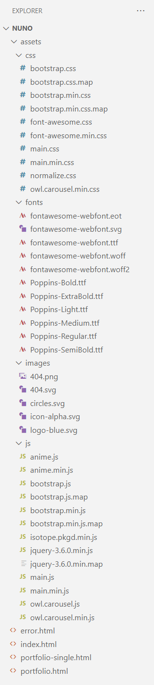

Introduction
Thank you very much for choosing our theme. We sincerely appreciate and we really hope you enjoy our theme!
Nuno is a simple, minimal portfolio theme that will suit many people. create your own website.
This document describes the location of the template files, the structure of the code in the files with html, css, js extension, libraries used and also useful ones provided links to libraries and services. We recommend that you familiarize yourself with this document, before contacting our support team.
For the convenience of working with the theme, we have added comments to all file types.
File structure
The project files are arranged in a classic way. The main files are main.css and main.js.